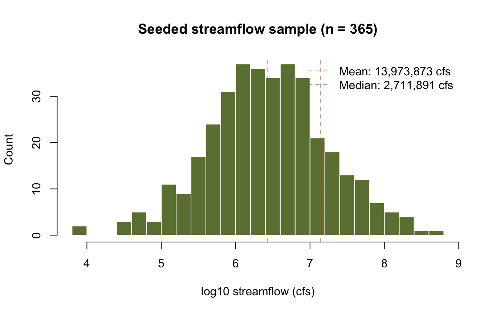
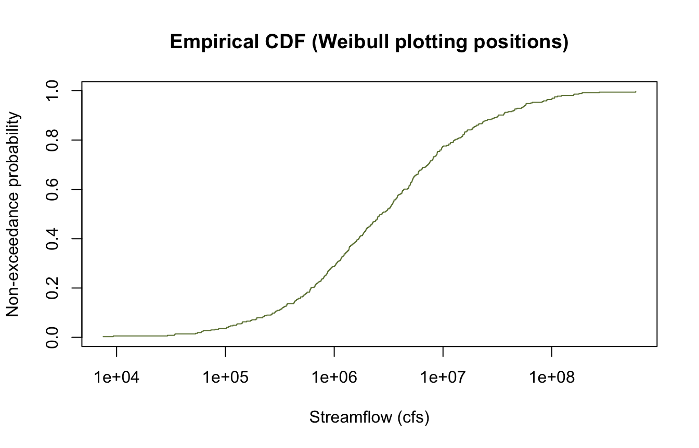
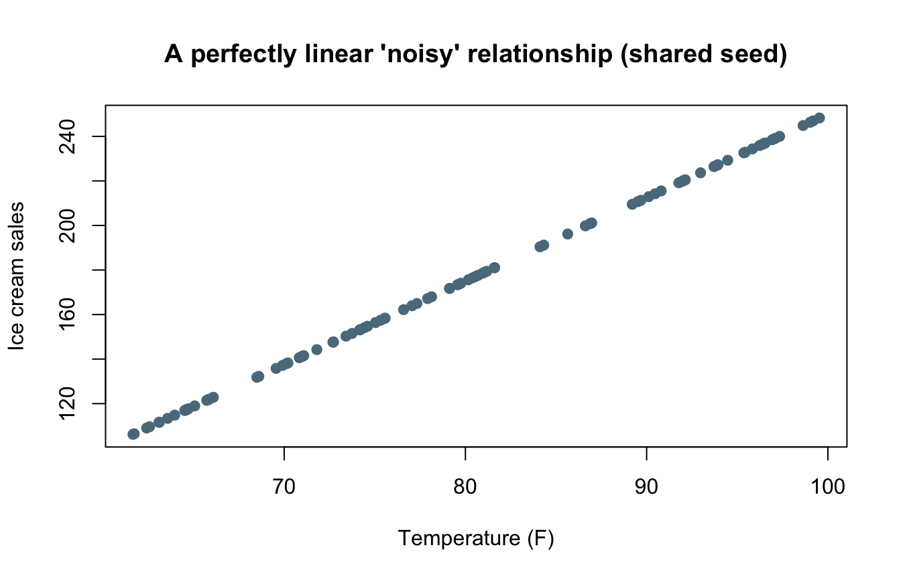
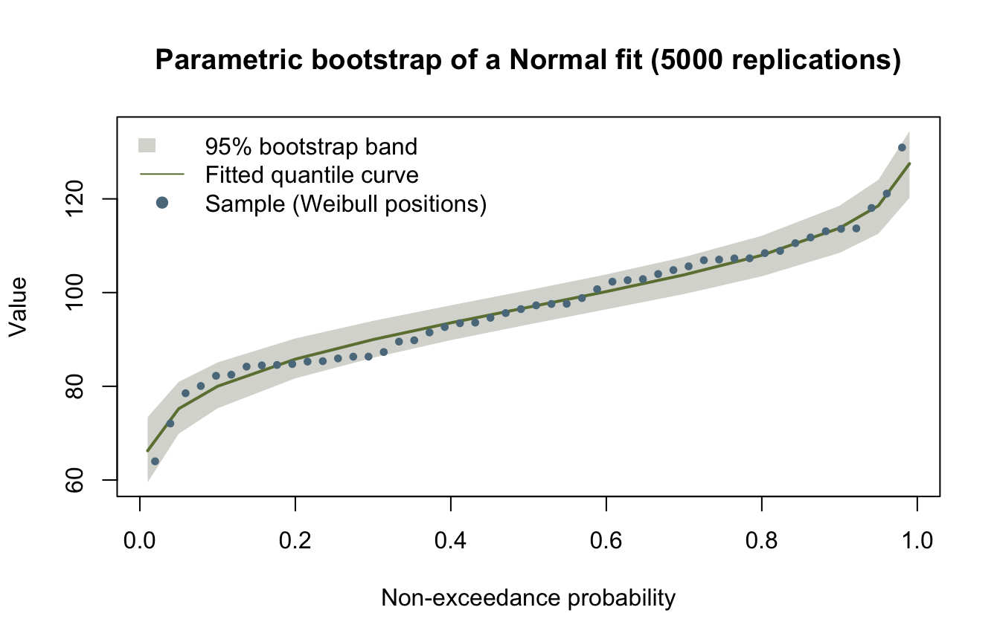
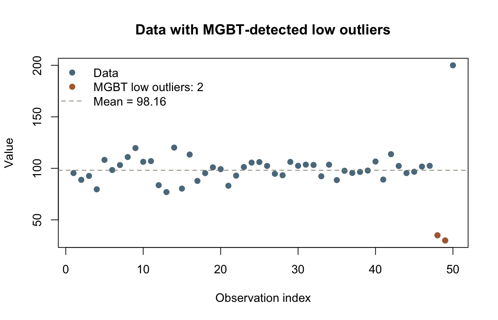
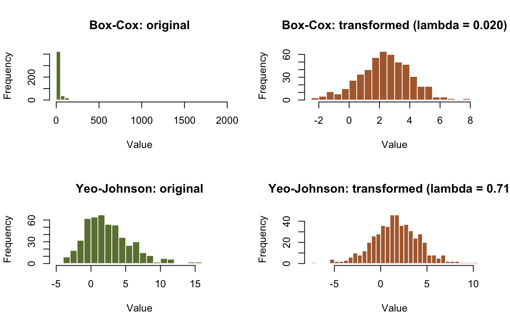

library(corehydror)09. Statistics
Ported from 09_statistics.ipynb in the USACE-RMC Numerics-Python-Examples repository (0BSD licensed). The upstream notebook drives the C# Numerics.dll through pythonnet; this version uses corehydror, whose compiled core is a validated C++ port of the same library, so the seeded results below reproduce the upstream outputs exactly. The Python version of this example uses the same core and prints the same numbers.
What you’ll learn
- Descriptive statistics and correlation with base R.
- Empirical plotting positions, the port’s public helper for frequency plots.
- Bootstrap confidence bands on a fitted quantile curve.
- Screening for low outliers with the Multiple Grubbs-Beck test.
- Box-Cox and Yeo-Johnson normalizing transformations.
Setup
The upstream notebook loads the CoreCLR runtime, resolves Numerics.dll, and converts every array with convert_to_dotnet_array. Here the only setup is loading the package.
Descriptive statistics
The upstream section drives the Numerics Statistics class. That class exists in the port’s core but is internal: the packages do not re-export what numpy, pandas, and base R already do well. The estimators are the same, so the base R versions below reproduce the upstream summary table digit for digit:
Statistics.Varianceuses Bessel’s correction (divide by \(n-1\)), likevar()andsd().Statistics.Skewnessis the bias-corrected Fisher skewness \(G_1 = \frac{\sqrt{n(n-1)}}{n-2} \, m_3 / m_2^{3/2}\), computed explicitly below.Statistics.Kurtosisis the adjusted Fisher excess kurtosis (the upstream table labels it “Kurtosis”).Statistics.Percentilematchesquantile()type 7, R’s default.
The streamflow sample itself is seeded through the port, so it is bit-identical to the upstream data. One naming gotcha carried over from C#: LogNormal is the base-10 family (LnNormal is base e).
streamflow <- dist_random(distribution("LogNormal", c(6.5, 0.8)), 365, seed = 42)
n <- length(streamflow)
central <- function(k) mean((streamflow - mean(streamflow))^k)
G1 <- sqrt(n * (n - 1)) / (n - 2) * central(3) / central(2)^1.5
g2 <- central(4) / central(2)^2 - 3
G2 <- ((n + 1) * g2 + 6) * (n - 1) / ((n - 2) * (n - 3))
summary_df <- data.frame(
statistic = c(
"Mean", "Std Dev", "Variance", "Minimum", "Maximum",
"Skewness", "Excess kurtosis",
"5th %ile", "25th %ile", "75th %ile", "95th %ile"
),
value = c(
mean(streamflow), sd(streamflow), var(streamflow),
min(streamflow), max(streamflow), G1, G2,
quantile(streamflow, c(0.05, 0.25, 0.75, 0.95), names = FALSE)
)
)
print(summary_df, row.names = FALSE) statistic value
Mean 1.397387e+07
Std Dev 4.195469e+07
Variance 1.760196e+15
Minimum 7.526316e+03
Maximum 5.909717e+08
Skewness 8.697790e+00
Excess kurtosis 1.038059e+02
5th %ile 1.270829e+05
25th %ile 8.245169e+05
75th %ile 8.827698e+06
95th %ile 5.803155e+07hist(log10(streamflow),
breaks = 30, col = "#6b7f3f", border = "white",
xlab = "log10 streamflow (cfs)", ylab = "Count",
main = "Seeded streamflow sample (n = 365)"
)
abline(v = log10(mean(streamflow)), col = "#b06a3b", lty = 2)
abline(v = log10(median(streamflow)), col = "#5b7a8c", lty = 2)
legend("topright",
legend = c(
sprintf("Mean: %s cfs", format(round(mean(streamflow)), big.mark = ",")),
sprintf("Median: %s cfs", format(round(median(streamflow)), big.mark = ","))
),
col = c("#b06a3b", "#5b7a8c"), lty = 2, bty = "n"
)
Plotting positions
The upstream notebook builds an empirical CDF by hand for its Kolmogorov-Smirnov diagnostic. The port exposes plotting_positions, the standard family of empirical non-exceedance probabilities \((i - \alpha)/(n + 1 - 2\alpha)\) used throughout flood frequency work. The default is Weibull (\(\alpha = 0\)); median, blom, cunnane, gringorten, and hazen are also available, or pass alpha = directly.
pp <- plotting_positions(n)
plot(sort(streamflow), pp,
type = "s", log = "x", col = "#6b7f3f",
xlab = "Streamflow (cfs)", ylab = "Non-exceedance probability",
main = "Empirical CDF (Weibull plotting positions)"
)
cat("Weibull, n = 10:", round(plotting_positions(10), 6), "\n")Weibull, n = 10: 0.090909 0.181818 0.272727 0.363636 0.454545 0.545455 0.636364 0.727273 0.818182 0.909091 cat(
"Median (alpha = 0.3175), n = 10:",
round(plotting_positions(10, method = "median"), 6), "\n"
)Median (alpha = 0.3175), n = 10: 0.065847 0.162325 0.258804 0.355282 0.451761 0.548239 0.644718 0.741196 0.837675 0.934153 Correlation
The upstream section uses the Numerics Correlation class for three measures: Pearson (linear association), Spearman (Pearson on ranks, so monotonic association), and Kendall’s \(\tau_b\) (concordance, tie-adjusted). Like Statistics, that class is internal to the port; base R’s cor() computes the same coefficients, and the seeded data is identical. Kendall’s \(\tau_b\) comes from cor(method = "kendall") in R or scipy.stats.kendalltau in Python; on this data it also equals 1.
Two upstream quirks worth knowing. Reusing seed 321 for both the temperature and the noise makes the noise an exactly linear function of temperature, so the “noisy” sales data is perfectly linear and every coefficient is exactly 1. And the outliers the upstream inserts are added after the data has been converted to .NET, so they never reach the correlation calls. We reproduce the coefficients as printed.
temperature <- dist_random(distribution("Uniform", c(60, 100)), 100, seed = 321)
noise <- dist_random(distribution("Uniform", c(0, 50)), 100, seed = 321)
sales <- 2.5 * temperature - 50 + noise
pearson_r <- cor(temperature, sales)
spearman_r <- cor(temperature, sales, method = "spearman")
cat(sprintf("Pearson correlation: %.4f\n", pearson_r))Pearson correlation: 1.0000cat(sprintf("Spearman correlation: %.4f\n", spearman_r))Spearman correlation: 1.0000plot(temperature, sales,
pch = 19, col = "#5b7a8c",
xlab = "Temperature (F)", ylab = "Ice cream sales",
main = "A perfectly linear 'noisy' relationship (shared seed)"
)
Not ported: hypothesis tests, Grubbs-Beck, Jenks
The upstream notebook’s middle sections use classes this port does not expose:
- Hypothesis tests (one- and two-sample t, Mann-Whitney U, Kolmogorov-Smirnov): the Numerics
HypothesisTestsandGoodnessOfFitclasses are internal to the core, and base R’st.test,wilcox.test, andks.test(orscipy.statsin Python) cover the same ground. - The single Grubbs-Beck outlier test is not public; only the Multiple Grubbs-Beck generalization below is, because that is the form Bulletin 17C uses.
- Jenks natural breaks: the
Numerics.MachineLearningnamespace is outside the scope of the port.
Bootstrap resampling
The upstream notebook bootstraps the product moments of a Gamma fit through BootstrapAnalysis.ProductMoments. The port wraps the same Numerics BootstrapAnalysis engine behind one public function, bootstrap_analysis, which exposes the quantile-curve surface instead: fit a distribution to the data, resample it replications times, re-estimate the parameters each time, and return percentile confidence bands on the quantile curve. The Normal family is currently the one wired to the bootstrap interface, so this recast bootstraps the Normal(100, 15) sample the upstream notebook generates for its t-test control group (seed 456; its mean, 96.881317, is printed upstream and asserted below).
sample_data <- dist_random(distribution("Normal", c(100, 15)), 50, seed = 456)
probs <- c(0.01, 0.05, 0.1, 0.2, 0.3, 0.4, 0.5, 0.6, 0.7, 0.8, 0.9, 0.95, 0.99)
boot <- bootstrap_analysis(sample_data, "Normal", probs,
replications = 5000L, seed = 456L, alpha = 0.05
)
cat(sprintf("Sample mean: %.6f\n", mean(sample_data)))Sample mean: 96.881317cat(sprintf(
"Fitted Normal parameters: %.6f %.6f\n",
boot$parameters[1], boot$parameters[2]
))Fitted Normal parameters: 96.880935 13.171142curve_df <- data.frame(
non_exceedance = probs,
quantile_mle_fit = boot$mode_curve,
lower_95 = boot$lower_ci,
upper_95 = boot$upper_ci
)
print(curve_df, row.names = FALSE) non_exceedance quantile_mle_fit lower_95 upper_95
0.01 66.24028 59.48249 73.41176
0.05 75.21633 69.85842 80.95832
0.10 80.00144 75.29697 85.09819
0.20 85.79582 81.69501 90.21302
0.30 89.97398 86.09233 93.96368
0.40 93.54406 89.85275 97.28284
0.50 96.88094 93.19635 100.52463
0.60 100.21781 96.42174 103.87559
0.70 103.78789 99.68280 107.58920
0.80 107.96605 103.47525 112.12539
0.90 113.76043 108.46435 118.54203
0.95 118.54554 112.56633 124.07460
0.99 127.52159 120.21994 134.47713plot(range(probs), range(c(boot$lower_ci, boot$upper_ci)),
type = "n",
xlab = "Non-exceedance probability", ylab = "Value",
main = "Parametric bootstrap of a Normal fit (5000 replications)"
)
polygon(c(probs, rev(probs)), c(boot$lower_ci, rev(boot$upper_ci)),
col = adjustcolor("#8c8c7a", alpha.f = 0.35), border = NA
)
lines(probs, boot$mode_curve, col = "#6b7f3f", lwd = 2)
points(plotting_positions(length(sample_data)), sort(sample_data),
pch = 19, cex = 0.6, col = "#5b7a8c"
)
legend("topleft",
legend = c("95% bootstrap band", "Fitted quantile curve", "Sample (Weibull positions)"),
fill = c(adjustcolor("#8c8c7a", alpha.f = 0.35), NA, NA),
border = NA, lty = c(NA, 1, NA), pch = c(NA, NA, 19),
col = c(NA, "#6b7f3f", "#5b7a8c"), bty = "n"
)
Outlier detection: Multiple Grubbs-Beck
The classic Grubbs-Beck test flags outliers under a log-normality assumption using a critical value that depends on sample size. The Multiple Grubbs-Beck test (MGBT) generalizes it to detect several potentially influential low floods (PILFs) at once, which matters in Bulletin 17C flood frequency analysis because low outliers can distort the fitted Log-Pearson Type III curve and bias upper-tail quantiles. mgbt_test returns the number of low outliers detected. Note that MGBT is a low-outlier screen only: the high value of 200 planted in this sample is not flagged.
clean <- dist_random(distribution("Normal", c(100, 10)), 47, seed = 789)
values <- c(clean, 35, 30, 200)
n_low <- mgbt_test(values)
mgbt_df <- data.frame(
metric = c("Sample size", "Mean", "Std Dev", "Low outliers detected (MGBT)"),
value = c(length(values), mean(values), sd(values), n_low)
)
print(mgbt_df, row.names = FALSE) metric value
Sample size 50.00000
Mean 98.15955
Std Dev 21.84480
Low outliers detected (MGBT) 2.00000low_idx <- order(values)[seq_len(n_low)]
plot(seq_along(values), values,
pch = 19, col = "#5b7a8c",
xlab = "Observation index", ylab = "Value",
main = "Data with MGBT-detected low outliers"
)
points(low_idx, values[low_idx], pch = 19, col = "#b06a3b")
abline(h = mean(values), col = "#8c8c7a", lty = 2)
legend("topleft",
legend = c(
"Data", sprintf("MGBT low outliers: %d", n_low),
sprintf("Mean = %.2f", mean(values))
),
col = c("#5b7a8c", "#b06a3b", "#8c8c7a"),
pch = c(19, 19, NA), lty = c(NA, NA, 2), bty = "n"
)
Data transformations: Box-Cox and Yeo-Johnson
Both transformations reshape a skewed variable toward normality. Box-Cox requires strictly positive data and finds a power \(\lambda\) that stabilizes variance and reduces skew; Yeo-Johnson extends the idea to zero and negative values. The port fits \(\lambda\) by maximum likelihood over \([-5, 5]\) (box_cox_lambda, yeo_johnson_lambda) and provides the forward and inverse transforms.
One honest floating-point note: the fitted exponent comes from a numerical search (Brent), and its trailing digits depend on platform and compiler, so R and Python agree to about seven decimals here rather than bit-exactly. The reproduction check therefore asserts the precision the upstream notebook prints.
bc_data <- dist_random(distribution("LogNormal", c(1, 0.75)), 500, seed = 789)
lambda_bc <- box_cox_lambda(bc_data)
bc_t <- box_cox(bc_data, lambda_bc)
bc_err <- max(abs(bc_data - box_cox_inverse(bc_t, lambda_bc)))
yj_data <- dist_random(distribution("Normal", c(0, 2)), 500, seed = 456) +
dist_random(distribution("Exponential", c(1, 1.5)), 500, seed = 456)
lambda_yj <- yeo_johnson_lambda(yj_data)
yj_t <- yeo_johnson(yj_data, lambda_yj)
yj_err <- max(abs(yj_data - yeo_johnson_inverse(yj_t, lambda_yj)))
# Std uses the population formula (n divisor) to match the upstream np.std table.
sd_pop <- function(x) sqrt(mean((x - mean(x))^2))
transform_df <- data.frame(
transform = c(
"Box-Cox (original)", "Box-Cox (transformed)",
"Yeo-Johnson (original)", "Yeo-Johnson (transformed)"
),
mean = c(mean(bc_data), mean(bc_t), mean(yj_data), mean(yj_t)),
std = c(sd_pop(bc_data), sd_pop(bc_t), sd_pop(yj_data), sd_pop(yj_t)),
min = c(min(bc_data), min(bc_t), min(yj_data), min(yj_t)),
max = c(max(bc_data), max(bc_t), max(yj_data), max(yj_t)),
lambda = c(lambda_bc, lambda_bc, lambda_yj, lambda_yj),
round_trip_error = c(bc_err, bc_err, yj_err, yj_err)
)
print(transform_df, row.names = FALSE) transform mean std min max
Box-Cox (original) 38.944335 132.921321 0.07776394 1942.229448
Box-Cox (transformed) 2.380719 1.721469 -2.48844514 8.190029
Yeo-Johnson (original) 2.527081 3.536851 -4.98445086 18.998849
Yeo-Johnson (transformed) 1.645339 2.560638 -7.02056261 10.403344
lambda round_trip_error
0.02047468 4.320100e-12
0.02047468 4.320100e-12
0.70981721 3.552714e-15
0.70981721 3.552714e-15op <- par(mfrow = c(2, 2))
hist(bc_data,
breaks = 30, col = "#6b7f3f", border = "white",
xlab = "Value", main = "Box-Cox: original"
)
hist(bc_t,
breaks = 30, col = "#b06a3b", border = "white",
xlab = "Value", main = sprintf("Box-Cox: transformed (lambda = %.3f)", lambda_bc)
)
hist(yj_data,
breaks = 30, col = "#6b7f3f", border = "white",
xlab = "Value", main = "Yeo-Johnson: original"
)
hist(yj_t,
breaks = 30, col = "#b06a3b", border = "white",
xlab = "Value", main = sprintf("Yeo-Johnson: transformed (lambda = %.3f)", lambda_yj)
)
par(op)Key takeaways
- Descriptive statistics and correlation need no special library; the port leaves them to numpy, pandas, and base R.
- Bootstrap for uncertainty when you do not want strong assumptions; the port’s surface is confidence bands on the quantile curve.
- Screen for low outliers with MGBT before fitting a flood frequency curve, and investigate before removing anything.
- Normalize skewed positive data with Box-Cox; reach for Yeo-Johnson when zeros or negatives appear.
Reproduction check
Values printed by the upstream notebook (run against the real C# library), compared with this port. “exact” means the value matches every digit the upstream notebook prints; the two fitted exponents are asserted at that printed precision because a numerical search sets their trailing digits (see the transforms section). “internal” rows have no upstream number, so they assert internal consistency plus cross-language identity against the Python twin.
| Quantity | Upstream C# | This port | Status |
|---|---|---|---|
Streamflow mean (LogNormal(6.5,0.8), n=365, seed 42) |
1.397387e+07 | mean(streamflow) |
exact |
| Streamflow std dev | 4.195469e+07 | sd(streamflow) |
exact |
| Streamflow skewness \(G_1\) | 8.697790 | G1 |
exact |
| Streamflow excess kurtosis | 103.8059 | G2 |
exact |
| Streamflow 95th percentile | 5.803155e+07 | quantile(., 0.95) |
exact |
| Pearson / Spearman correlation | 1.0000 | cor() |
exact |
Control sample mean (Normal(100,15), n=50, seed 456) |
96.881317 | mean(sample_data) |
exact |
| MGBT low outliers | 2 | mgbt_test |
exact |
| MGBT sample mean / std dev | 98.159548 / 21.844798 | base R | exact |
| Box-Cox lambda | 0.020475 | box_cox_lambda |
exact |
| Box-Cox transformed mean | 2.380719 | mean(bc_t) |
exact |
| Yeo-Johnson lambda | 0.709817 | yeo_johnson_lambda |
exact |
| Yeo-Johnson transformed mean | 1.645339 | mean(yj_t) |
exact |
| Transform round trips | (not printed) | max abs error < 1e-9 | internal |
| Bootstrap quantile bands | (no upstream analogue) | ordering + literals | internal |
| Plotting positions | (not in upstream 09) | closed form | internal |
The chunk below fails the render if any value drifts. The final block asserts the cross-language guarantee: the seeded values above are the exact values the Python notebook prints.
# Upstream: 09_statistics.ipynb, cell 4 output (descriptive summary table).
stopifnot(
abs(mean(streamflow) / 1.397387e7 - 1) < 1e-6,
abs(sd(streamflow) / 4.195469e7 - 1) < 1e-6,
abs(G1 - 8.697790) < 5e-7,
abs(G2 / 103.8059 - 1) < 1e-6,
abs(quantile(streamflow, 0.95, names = FALSE) / 5.803155e7 - 1) < 1e-6
)
# Upstream: cell 6 output (all three coefficients print 1.0000).
stopifnot(pearson_r > 1 - 1e-12, spearman_r > 1 - 1e-12)
# Upstream: cell 8 output (t-test control group mean, reused for the bootstrap).
stopifnot(abs(mean(sample_data) - 96.881317) < 5e-7)
# Upstream: cell 17 output (Multiple Grubbs-Beck summary).
stopifnot(
n_low == 2,
abs(mean(values) - 98.159548) < 5e-7,
abs(sd(values) - 21.844798) < 5e-7
)
# Upstream: cell 21 output (transformation summary table).
stopifnot(
abs(lambda_bc - 0.020475) < 5e-7,
abs(mean(bc_t) - 2.380719) < 5e-7,
abs(lambda_yj - 0.709817) < 5e-7,
abs(mean(yj_t) - 1.645339) < 5e-7
)
# Internal consistency: transforms invert, plotting positions match closed form,
# bootstrap bands bracket the fitted curve, and the fitted median of a Normal is
# its mean parameter.
stopifnot(
bc_err < 1e-9, yj_err < 1e-9,
all(abs(plotting_positions(10) - (1:10) / 11) < 1e-15),
all(boot$lower_ci < boot$mode_curve), all(boot$mode_curve < boot$upper_ci),
boot$mode_curve[7] == boot$parameters[1] # probs[7] == 0.5
)
# Cross-language identity: the Python notebook asserts these same seeded
# literals. The values are bit-exact across languages; the comparisons carry a
# 1e-15 relative tolerance only because R's decimal parser can land one ulp away
# from the written literal.
stopifnot(
abs(streamflow[1] / 1754357.4518502082 - 1) < 1e-15,
abs(boot$parameters[1] / 96.88093513274926 - 1) < 1e-15,
abs(boot$lower_ci[7] / 93.19634521338513 - 1) < 1e-15,
abs(boot$upper_ci[7] / 100.52462982500435 - 1) < 1e-15,
abs(mean(values) / 98.15954794981819 - 1) < 1e-15,
abs(plotting_positions(10, method = "median")[1] / 0.06584659913169319 - 1) < 1e-15
)
cat("All reproduction checks passed.\n")All reproduction checks passed.